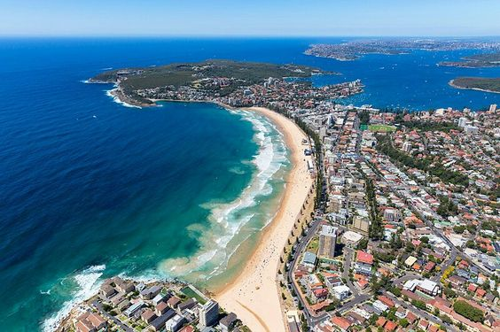

Australia's history is marked by a rich indigenous heritage dating back thousands of years. Colonised by Europeans from 1788 as a British penal colony, Australia expanded rapidly, facing conflicts with indigenous peoples as it developed. The six colonies federated in 1901, leading to the formation of the Commonwealth of Australia. Since then, the country has flourished as an industrialised, culturally and socially diverse nation with a high standard of living. Today, Australia is recognised for its stable democracy, strong economy and vibrant multicultural society.
Legend has it that a chef from Oceania made the dish for the dancer when she stayed at a local hotel during a tour. The problem is that both Australia and New Zealand claim to be the inventors of the recipe. The ballerina was in both countries during the 1920s and since then the dessert has become very popular in both places.
Another popular dessert among Australians is Lamingtons. They are so traditional that they are called "Australia's national cake". Just like Pavlova, their name is a tribute. It is believed that Lamingtons were named after a lord with the same surname who was governor of Queensland.
Fish and chips is an English tradition that has also become very popular in Australia. But you can't talk about typical Australian food without mentioning Barramundi. This is the name given by the Aboriginal peoples to a fish that is very common in Oceania, also known as barramundi.
Meat pies may sound very English, but Australians have their own version of the dish. The main characteristic of the "aussie pie" is that they are pies that fit in one hand. Australians fill the pastry with minced meat, tomato sauce, onions, mushrooms and even cheese.
this is the map of australia, this map shows all the states and cities
Many people think that the capital of Australia is Sydney, but they're wrong! The capital is Canberra and is located in the region called "Australian Capital Territory".
in australia we also have sydney, a very beautiful city with many tourist attractions.
The best time to visit Australia and enjoy its stunning beaches is during the summer, from December to February. During this season, the weather is warm and sunny, ideal for activities such as swimming, surfing and relaxing in the sun. The waters are warmer, especially in the north of the country, providing perfect conditions for exploring the coral reefs and tropical islands. It's also the peak tourist season, with coastal cities like Sydney and the Gold Coast buzzing with activities and events. In short, summer in Australia is synonymous with stunning beaches and memorable outdoor experiences.
Manly Beach, Sydney, Australia
